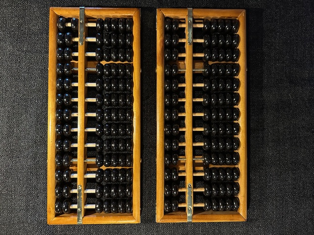
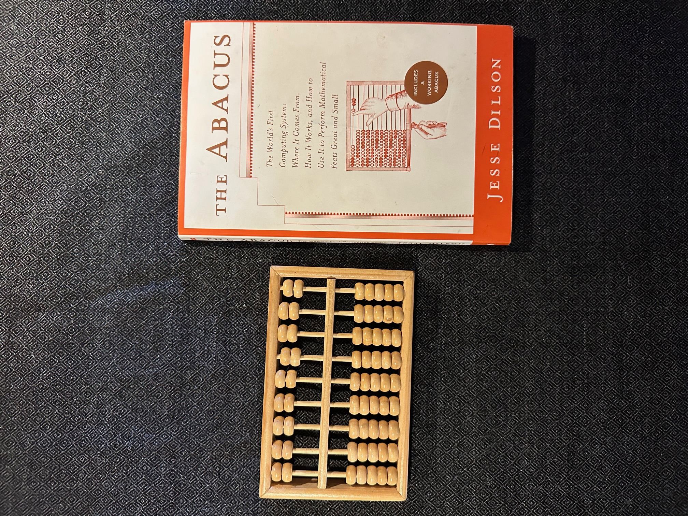
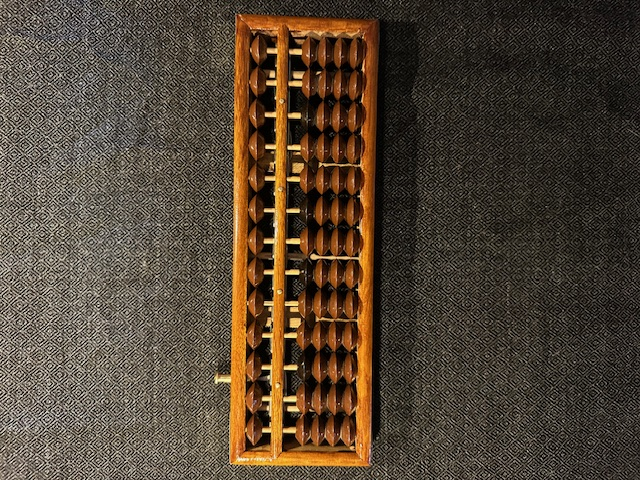
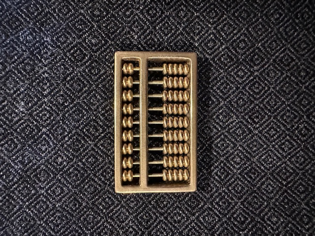
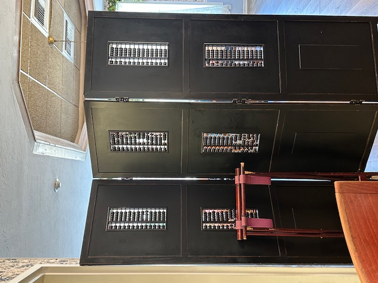
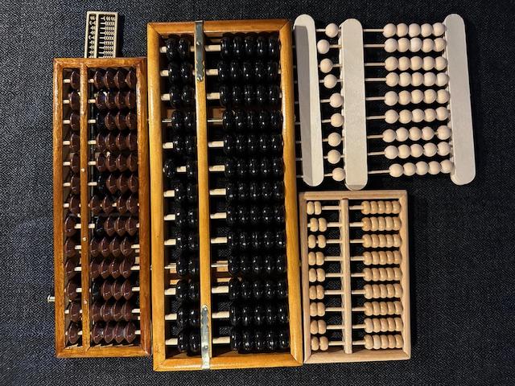

Two Chinese counting frames, called suanpan. Top was purchased off Amazon for $13.99, bottom for $14.99 not including tax or shipping in July-August 2025, wooden frame with plastic beads. Notice they have 13 rods each.

Small all-wood Chinese abacus and manual, purchased at a bookstore for $16.95 (tax not included) circa 2008

Japanese Soroban abacus made of wood and metal, purchased at a toy shop 2014-2015 for an unknown price. Notice that this abacus has little bumps on the middle bar that can be used as a decimal point or as thousands place markers.

Small decorative metal Chinese abacus, purchased at a museum in Montana for around $20 mid 2023

Decorative counting frames embedded in a screen at a restaurant in Florida, early 2026

The abacuses all together for size comparison, the handmade version is clearly on the lower right.

Why does the Japanese abacus have only four lower beads?
Why do some counting frames have one upper bead while others have two?
Why does the handmade abacus have an extra lower bead, but only one upper bead?
The base-10 abacus only needs one upper bead and four lower beads, hence the Japanese one has only those beads.
The Chinese abacus has two additional beads on each rod, one in the upper deck and one in the lower deck, both provide extra features.
There will be much more on the lower fifth bead in module II.
The uppermost upper beads were supposedly used for working with hexadecimal numbers, for another use of these beads see XIV How to Deal with Overflow.
The extra feature provided by the additional lower bead (full rods) is useful for the basic operations of arithmetic, this feature is used extensively in module II, conversely second upper beads aren’t used at all in module II.